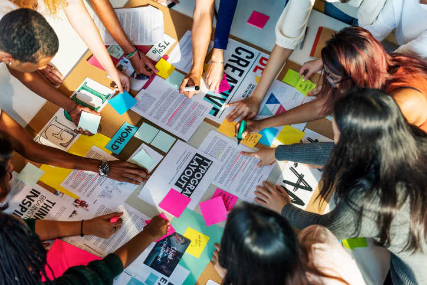
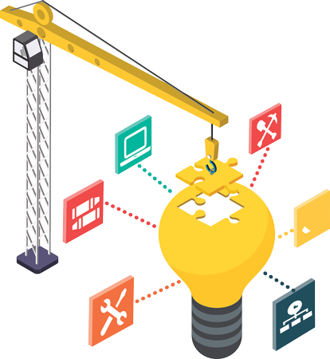

El diseño de un proyecto es una de las fases iniciales de su ciclo de vida donde se planifican las ideas, procesos, recursos y entregables en siete pasos. Descubre cómo el diseño de proyectos con recursos detallados y elementos visuales puede ayudar a optimizar la eficiencia de tu equipo.
El diseño del proyecto es una fase importante para ejecutar un proyecto exitoso. Desde la recopilación de la información y los recursos necesarios hasta la coordinación con los miembros del equipo, tu trabajo es hacer que los detalles cobren vida. Con el diseño de proyectos adecuado, tú y tu equipo podrán afrontar cualquier desafío que se les presente y lograr grandes resultados.
